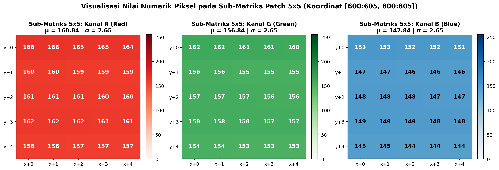
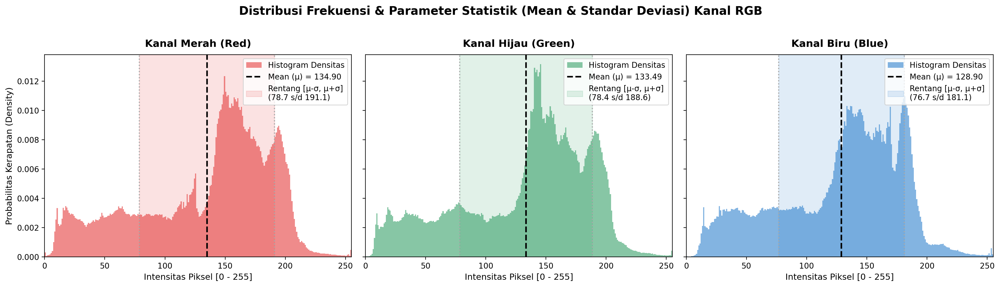
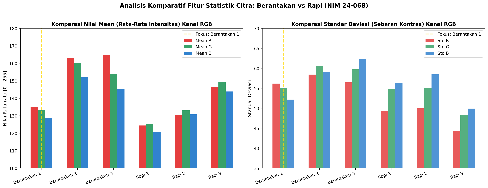

Ekstraksi Fitur Citra Digital: Analisis Mean dan Standar Deviasi Kanal RGB (Red, Green, Blue)#
Mata Kuliah: Pengolahan Sinyal Digital (PSD)
Topik: Pengolahan Citra Digital (Digital Image Processing)
Program Studi: Sains Data / Teknik Informatika
Penulis: Muhammad Zaidan Nabil Rafi (NIM: 240411100068)
Sampel Citra Fokus: 24-068 Berantakan 1.jpeg
Dataset Pendukung: Direktori Foto citra/ (6 Sampel Citra Berantakan vs Rapi)
Tanggal: November 2026
Daftar Isi#
Pendahuluan: Dari Sinyal 1D ke Sinyal Spasial 2D/3D
Karakteristik dan Representasi Citra Sampel
2.1 Identitas dan Resolusi Citra
2.2 Dekomposisi Kanal Warna RGB
Landasan Teori dan Formulasi Matematis
3.1 Model Warna RGB dan Kedalaman Bit (Bit-Depth)
3.2 Formulasi Nilai Rata-rata (Mean / \(\mu\))
3.3 Formulasi Simpangan Baku (Standar Deviasi / \(\sigma\))
3.4 Formulasi Mean Gabungan Kanal RGB
Simulasi Perhitungan Manual (Step-by-Step Sub-Matriks \(5 \times 5\))
4.1 Ekstraksi Patch Numerik Piksel Nyata
4.2 Perhitungan Manual Kanal Merah (R)
4.3 Perhitungan Manual Kanal Hijau (G)
4.4 Perhitungan Manual Kanal Biru (B)
4.5 Rekapitulasi Perhitungan Manual Patch
Implementasi Kode Komputasi dengan Python
5.1 Skrip Ekstraksi Fitur Citra Tunggal (
24-068 Berantakan 1.jpeg)5.2 Skrip Ekstraksi Otomatis Batch untuk Seluruh Citra
Hasil Ekstraksi Fitur Aktual pada Citra
24-068 Berantakan 16.1 Tabel Statistik Lengkap
6.2 Analisis Distribusi Histogram Intensitas Piksel
Interpretasi Fisis dan Analisis Karakteristik Citra
7.1 Makna Nilai Rata-rata Kanal (Mean RGB)
7.2 Makna Standar Deviasi (Kontras dan Kompleksitas Visual)
Studi Komparatif: Citra Kondisi “Berantakan” vs “Rapi”
Relevansi dalam Kecerdasan Buatan dan Computer Vision
Kesimpulan
Referensi
1. Pendahuluan: Dari Sinyal 1D ke Sinyal Spasial 2D/3D#
Dalam disiplin ilmu Pengolahan Sinyal Digital (PSD), sinyal didefinisikan sebagai fungsi yang membawa informasi mengenai status atau perilaku suatu fenomena fisis. Berdasarkan dimensinya:
Sinyal 1-Dimensi (1D): Sinyal bervariasi terhadap satu variabel independen, umumnya adalah waktu (\(t\)). Contoh paling nyata adalah sinyal suara (audio) \(s(t)\), di mana amplitudo tekanan gelombang udara berubah terhadap waktu.
Sinyal 2-Dimensi (2D): Sinyal bervariasi terhadap dua variabel spasial independen, yaitu koordinat horizontal (\(x\)) dan vertikal (\(y\)). Contohnya adalah citra digital monokrom / grayscale \(I(x, y)\), di mana setiap titik merepresentasikan intensitas kecerahan pada koordinat tersebut.
Sinyal Multi-Kanal / Tensor 3-Dimensi (3D): Citra digital berwarna tersusun atas sekumpulan bidang 2D independen yang mewakili komponen warna tertentu. Pada model warna RGB (Red, Green, Blue), sinyal citra dimodelkan sebagai fungsi \(I(x, y, c)\), di mana \(c \in \{R, G, B\}\) mewakili indeks kanal warna.
+-----------------------------------------------------------------------------------+
| HIERARKI SINYAL DIGITAL |
+-----------------------------------------------------------------------------------+
| 1D: Sinyal Audio -> s(t) Amplitudo = f(Waktu) |
| 2D: Citra Grayscale -> I(x, y) Kecerahan = f(Baris, Kolom) |
| 3D: Citra Warna (RGB) -> I(x, y, c) Intensitas = f(Baris, Kolom, Kanal) |
+-----------------------------------------------------------------------------------+
Tujuan mendasar dari ekstraksi fitur statistik citra adalah mereduksi volume data piksel yang sangat besar (jutaan titik) menjadi sekumpulan ringkasan deskriptor numerik yang bermakna. Dua deskriptor statistik momen warna (color moments) yang paling fundamental adalah Mean (Rata-rata) dan Standar Deviasi (Simpangan Baku).
2. Karakteristik dan Representasi Citra Sampel#
2.1 Identitas dan Resolusi Citra#
Pada materi ini, objek analisis utama yang dibedah secara komprehensif adalah:
Nama Berkas:
24-068 Berantakan 1.jpegKategori Objek: Citra Ruang/Meja Kondisi Berantakan (Cluttered Scene)
Format Berkas: JPEG (Joint Photographic Experts Group)
Lebar Citra (\(W\) / Width): \(1600\) piksel (arah sumbu horizontal \(x\))
Tinggi Citra (\(H\) / Height): \(1200\) piksel (arah sumbu vertikal \(y\))
Jumlah Kanal (\(C\) / Channels): \(3\) kanal warna aditif (Red, Green, Blue)
Total Piksel per Kanal: $\(N = W \times H = 1600 \times 1200 = 1.920.000\text{ piksel}\)$
Total Data Numerik (Elemen Matriks): $\(N_{\text{total}} = 1.920.000 \times 3 = 5.760.000\text{ nilai intensitas}\)$
2.2 Dekomposisi Kanal Warna RGB#
Citra digital berwarna tidak disimpan sebagai warna tunggal di memori, melainkan ditumpuk dari 3 matriks intensitas 2 dimensi:
Bidang Merah (Red Plane / \(I_R\)): Menyimpan energi panjang gelombang merah (\(\approx 700\text{ nm}\)).
Bidang Hijau (Green Plane / \(I_G\)): Menyimpan energi panjang gelombang hijau (\(\approx 546\text{ nm}\)).
Bidang Biru (Blue Plane / \(I_B\)): Menyimpan energi panjang gelombang biru (\(\approx 435\text{ nm}\)).

Interpretasi Visual Gambar di Atas:
Pada baris atas, kanal R, G, dan B ditampilkan dalam skala keabuan (grayscale intensity). Bagian yang tampak terang (putih) menunjukkan bahwa piksel tersebut memiliki kontribusi energi yang dominan pada kanal bersangkutan.
Pada baris bawah, masing-masing kanal diisolasi ke dalam warna monokromatis aslinya (merah murni, hijau murni, dan biru murni) sebelum digabungkan kembali (channel superposition) membentuk citra RGB penuh.
3. Landasan Teori dan Formulasi Matematis#
3.1 Model Warna RGB dan Kedalaman Bit (Bit-Depth)#
Setiap nilai piksel pada citra digital standar disimpan menggunakan format bilangan bulat tak bertanda 8-bit (unsigned 8-bit integer / uint8).
Rentang nilai intensitas yang mungkin dimiliki oleh setiap piksel pada kanal \(c\) adalah:
Nilai \(0\) melambangkan ketiadaan energi cahaya secara total (hitam mutlak).
Nilai \(255\) melambangkan saturasi energi cahaya penuh (kecerahan maksimal).
Kombinasi \((R=255, G=255, B=255)\) menghasilkan warna putih murni, sedangkan \((R=0, G=0, B=0)\) menghasilkan warna hitam murni.
Hitam [0] <------------------- Abu-abu [128] -------------------> Putih Terang [255]
3.2 Formulasi Nilai Rata-rata (Mean / \(\mu\))#
Mean (Nilai Rata-rata) adalah momen pertama (first-order statistical moment) dari distribusi intensitas warna. Mean mengukur tendensi sentral atau tingkat kecerahan rata-rata (average brightness / luminance) suatu kanal citra.
Secara matematis, untuk citra berukuran \(H \times W\) pada kanal \(c \in \{R, G, B\}\), nilai Mean didefinisikan sebagai:
Dimana:
\(\mu_c\) adalah nilai rata-rata intensitas untuk kanal warna \(c\).
\(H\) adalah tinggi citra dalam satuan piksel (jumlah baris matriks).
\(W\) adalah lebar citra dalam satuan piksel (jumlah kolom matriks).
\(I_c(i, j)\) adalah nilai intensitas piksel pada baris ke-\(i\) dan kolom ke-\(j\) pada kanal \(c\).
\(H \times W\) adalah jumlah total piksel pada satu bidang kanal (\(N\)).
3.3 Formulasi Simpangan Baku (Standar Deviasi / \(\sigma\))#
Standar Deviasi (Simpangan Baku) adalah momen sentral kedua (second-order central moment) yang telah diakarkuadratkan. Standar deviasi mengukur seberapa jauh nilai intensitas piksel tersebar dari nilai rata-ratanya.
Dalam domain citra, standar deviasi merupakan representasi langsung dari kontras citra (image contrast) dan tingkat dinamika tekstur visual:
\(\sigma\) bernilai kecil: Nilai piksel berkumpul sangat dekat di sekitar mean. Citra terlihat monoton, seragam, atau berkontras rendah (low contrast / flat).
\(\sigma\) bernilai besar: Terdapat rentang variasi yang lebar antara area gelap (bayangan) dan area terang (sorotan cahaya). Citra memiliki dinamika kontras tinggi dan kaya detail visual (high contrast).
Rumus matematis Standar Deviasi Populasi (\(\sigma_c\)) pada kanal \(c\) adalah:
Untuk Standar Deviasi Sampel (\(s_c\)) dengan koreksi Bessel (\(N - 1\)):
Catatan Teknis PSD: Karena jumlah piksel citra sampel kita sangat besar (\(N = 1.920.000\)), selisih antara pembagi \(N\) dan \(N - 1\) adalah: $\(\frac{1}{1.920.000} \text{ vs } \frac{1}{1.919.999} \approx 0.0000005\)\( Perbedaannya sangat kecil (\)< 0.00002\(), sehingga standar deviasi populasi (\)\sigma\() dan sampel (\)s$) menghasilkan nilai yang secara praktis identik.
3.4 Formulasi Mean Gabungan Kanal RGB#
Untuk mendapatkan gambaran umum kecerahan citra secara keseluruhan, kita dapat menghitung rata-rata dari ketiga kanal warna (mean of RGB channel means):
Secara ekuivalen, \(\mu_{\text{RGB}}\) juga sama dengan penjumlahan seluruh \(5.760.000\) nilai piksel yang dibagi dengan total elemen pada tensor 3D:
4. Simulasi Perhitungan Manual (Step-by-Step Sub-Matriks \(5 \times 5\))#
Bagi seorang pemula atau mahasiswa yang baru mempelajari pengolahan citra digital, membayangkan operasi matematika pada \(1.920.000\) piksel secara langsung dapat terasa abstrak.
Oleh karena itu, pada bagian ini disajikan simulasi perhitungan manual langkah demi langkah menggunakan sub-matriks berukuran \(5 \times 5\) (\(N = 25\) piksel) yang dipotong langsung dari bagian tengah citra nyata 24-068 Berantakan 1.jpeg pada koordinat baris \(y \in [600, 604]\) dan kolom \(x \in [800, 804]\).

4.1 Ekstraksi Patch Numerik Piksel Nyata#
Berikut adalah matriks integer \(5 \times 5\) hasil ekstraksi aktual dari citra:
Koordinat |
Kanal Merah (\(I_R\)) |
Kanal Hijau (\(I_G\)) |
Kanal Biru (\(I_B\)) |
|---|---|---|---|
Baris 0 |
|
|
|
Baris 1 |
|
|
|
Baris 2 |
|
|
|
Baris 3 |
|
|
|
Baris 4 |
|
|
|
Jumlah elemen dalam patch: \(N = 5 \times 5 = 25\) piksel.
4.2 Perhitungan Manual Kanal Merah (R)#
Langkah 1: Menghitung Jumlah Total Nilai Intensitas (\(\sum I_R\))#
Langkah 2: Menghitung Nilai Rata-rata (\(\mu_R\))#
Langkah 3: Menghitung Selisih Deviasi Kuadrat \(\sum (I_R(k) - \mu_R)^2\)#
Tabel deviasi kuadrat terhadap \(\mu_R = 160.84\):
Baris 0:
\((166 - 160.84)^2 = (5.16)^2 = 26.6256\) (\(\times 2 = 53.2512\))
\((165 - 160.84)^2 = (4.16)^2 = 17.3056\) (\(\times 2 = 34.6112\))
\((164 - 160.84)^2 = (3.16)^2 = 9.9856\)
Subtotal Baris 0 = \(97.8480\)
Baris 1:
\((160 - 160.84)^2 = (-0.84)^2 = 0.7056\) (\(\times 2 = 1.4112\))
\((159 - 160.84)^2 = (-1.84)^2 = 3.3856\) (\(\times 3 = 10.1568\))
Subtotal Baris 1 = \(11.5680\)
Baris 2:
\((161 - 160.84)^2 = (0.16)^2 = 0.0256\) (\(\times 3 = 0.0768\))
\((160 - 160.84)^2 = (-0.84)^2 = 0.7056\) (\(\times 2 = 1.4112\))
Subtotal Baris 2 = \(1.4880\)
Baris 3:
\((162 - 160.84)^2 = (1.16)^2 = 1.3456\) (\(\times 3 = 4.0368\))
\((161 - 160.84)^2 = (0.16)^2 = 0.0256\) (\(\times 2 = 0.0512\))
Subtotal Baris 3 = \(4.0880\)
Baris 4:
\((158 - 160.84)^2 = (-2.84)^2 = 8.0656\) (\(\times 2 = 16.1312\))
\((157 - 160.84)^2 = (-3.84)^2 = 14.7456\) (\(\times 3 = 44.2368\))
Subtotal Baris 4 = \(60.3680\)
Jumlah Total Kuadrat Deviasi (\(SS_R\)): $\(\sum_{k=1}^{25} (I_R(k) - \mu_R)^2 = 97.8480 + 11.5680 + 1.4880 + 4.0880 + 60.3680 = \mathbf{175.3600}\)$
Langkah 4: Menghitung Varians (\(\sigma_R^2\)) dan Standar Deviasi (\(\sigma_R\))#
4.3 Perhitungan Manual Kanal Hijau (G)#
Perhatikan pola menarik pada data: seluruh nilai intensitas Kanal Hijau pada matriks ini tepat bergeser \(4\) satuan lebih rendah daripada Kanal Merah (\(I_G(k) = I_R(k) - 4\)).
Jumlah Total Nilai (\(\sum I_G\)): $\(\sum I_G = \sum (I_R - 4) = 4021 - (25 \times 4) = 4021 - 100 = \mathbf{3921}\)$
Mean (\(\mu_G\)): $\(\mu_G = \frac{3921}{25} = \mathbf{156.8400}\)$
Standar Deviasi (\(\sigma_G\)): Karena pergeseran nilai bersifat konstan (\(c = -4\)), sebaran data tidak berubah: $\((I_G - \mu_G) = ((I_R - 4) - (\mu_R - 4)) = (I_R - \mu_R)\)\( Maka nilai varians dan standar deviasi persis sama: \)\(\sigma_G = \sqrt{\frac{175.3600}{25}} = \sqrt{7.0144} \approx \mathbf{2.6485}\)$
4.4 Perhitungan Manual Kanal Biru (B)#
Dengan cara serupa, perhatikan bahwa Kanal Biru bergeser tepat \(13\) satuan lebih rendah daripada Kanal Merah (\(I_B(k) = I_R(k) - 13\)).
Jumlah Total Nilai (\(\sum I_B\)): $\(\sum I_B = 4021 - (25 \times 13) = 4021 - 325 = \mathbf{3696}\)$
Mean (\(\mu_B\)): $\(\mu_B = \frac{3696}{25} = \mathbf{147.8400}\)$
Standar Deviasi (\(\sigma_B\)): $\(\sigma_B = \sqrt{7.0144} \approx \mathbf{2.6485}\)$
4.5 Rekapitulasi Perhitungan Manual Patch#
Dari hasil perhitungan manual sub-matriks \(5 \times 5\):
Rata-rata Kanal Merah (\(\mu_R\)): \(160.8400\)
Rata-rata Kanal Hijau (\(\mu_G\)): \(156.8400\)
Rata-rata Kanal Biru (\(\mu_B\)): \(147.8400\)
Mean Gabungan Kanal RGB (\(\mu_{\text{RGB}}\)): $\(\mu_{\text{RGB-Patch}} = \frac{160.84 + 156.84 + 147.84}{3} = \frac{465.52}{3} = \mathbf{155.1733}\)$
Standar Deviasi per Kanal (\(\sigma\)): \(2.6485\)
Wawasan Penting: Perhitungan manual di atas membuktikan dengan jelas bagaimana algoritma komputasi memproses data matriks 2 dimensi. Komputer modern menjalankan operasi yang sama persis seperti di atas, namun diperluas untuk mencakup seluruh \(1.920.000\) piksel secara paralel.
5. Implementasi Kode Komputasi dengan Python#
Dalam lingkungan praktikum dan riset data nyata, perhitungan dilakukan menggunakan pustaka standar Python: OpenCV (cv2) untuk manipulasi berkas citra dan NumPy (numpy) untuk aljabar linier ter-vektorisasi berkecepatan tinggi.
5.1 Skrip Ekstraksi Fitur Citra Tunggal (24-068 Berantakan 1.jpeg)#
"""
Praktikum Pengolahan Sinyal Digital (PSD)
Modul: Ekstraksi Fitur Citra Digital RGB
Penulis: Muhammad Zaidan Nabil Rafi (240411100068)
"""
import cv2
import numpy as np
# 1. Definisikan jalur berkas citra
image_path = r'Foto citra/24-068 Berantakan 1.jpeg'
# 2. Baca citra menggunakan OpenCV
# CATATAN PENTING: Secara bawaan, OpenCV membaca citra dalam format BGR (bukan RGB)!
image_bgr = cv2.imread(image_path)
if image_bgr is None:
raise FileNotFoundError(f"Citra tidak ditemukan di jalur: {image_path}")
# 3. Konversi format warna dari BGR ke RGB
image_rgb = cv2.cvtColor(image_bgr, cv2.COLOR_BGR2RGB)
# Dapatkan dimensi matriks citra (Height, Width, Channels)
height, width, channels = image_rgb.shape
total_pixels = height * width
# 4. Pisahkan kanal warna menjadi array 2D independen
channel_red = image_rgb[:, :, 0] # Indeks 0 = Kanal Merah
channel_green = image_rgb[:, :, 1] # Indeks 1 = Kanal Hijau
channel_blue = image_rgb[:, :, 2] # Indeks 2 = Kanal Biru
# 5. Hitung Nilai Rata-rata (Mean) untuk masing-masing kanal
mean_r = float(np.mean(channel_red))
mean_g = float(np.mean(channel_green))
mean_b = float(np.mean(channel_blue))
# Hitung Rata-rata dari Nilai Rata-rata Kanal RGB
mean_of_rgb_channels = float((mean_r + mean_g + mean_b) / 3.0)
# 6. Hitung Standar Deviasi (Simpangan Baku) untuk masing-masing kanal
std_r = float(np.std(channel_red))
std_g = float(np.std(channel_green))
std_b = float(np.std(channel_blue))
# Standar deviasi tensor keseluruhan (variasi spasial + variasi spektral warna)
overall_std = float(np.std(image_rgb))
# 7. Tampilkan hasil ekstraksi ke konsol
print("=" * 60)
print(" HASIL EKSTRAKSI FITUR CITRA DIGITAL (RGB)")
print(" File: 24-068 Berantakan 1.jpeg")
print("=" * 60)
print(f"Resolusi Citra : {width} x {height} piksel")
print(f"Total Piksel per Kanal : {total_pixels:,} piksel")
print("-" * 60)
print(f"Kanal Merah (Red) : Mean = {mean_r:8.4f} | Std Dev = {std_r:8.4f}")
print(f"Kanal Hijau (Green) : Mean = {mean_g:8.4f} | Std Dev = {std_g:8.4f}")
print(f"Kanal Biru (Blue) : Mean = {mean_b:8.4f} | Std Dev = {std_b:8.4f}")
print("-" * 60)
print(f"Mean dari Rata-rata RGB : {mean_of_rgb_channels:8.4f}")
print(f"Standar Deviasi Global : {overall_std:8.4f}")
print("=" * 60)
5.2 Skrip Ekstraksi Otomatis Batch untuk Seluruh Citra#
Untuk mengolah seluruh berkas citra dalam folder Foto citra/ dan menyimpannya ke dalam format tabel data (pandas.DataFrame), dapat digunakan kode otomasi berikut:
import os
import glob
import cv2
import numpy as np
import pandas as pd
folder_path = r'Foto citra'
image_files = sorted(glob.glob(os.path.join(folder_path, '*.jpeg')))
feature_records = []
for file_path in image_files:
file_name = os.path.basename(file_path)
# Baca dan konversi ke RGB
img_bgr = cv2.imread(file_path)
img_rgb = cv2.cvtColor(img_bgr, cv2.COLOR_BGR2RGB)
h, w, _ = img_rgb.shape
r, g, b = img_rgb[:, :, 0], img_rgb[:, :, 1], img_rgb[:, :, 2]
mean_r, std_r = float(np.mean(r)), float(np.std(r))
mean_g, std_g = float(np.mean(g)), float(np.std(g))
mean_b, std_b = float(np.mean(b)), float(np.std(b))
mean_rgb = float((mean_r + mean_g + mean_b) / 3.0)
overall_std = float(np.std(img_rgb))
label_kategori = 'Berantakan' if 'Berantakan' in file_name else 'Rapi'
feature_records.append({
'Nama File': file_name,
'Kategori': label_kategori,
'Resolusi': f"{w}x{h}",
'Mean_R': round(mean_r, 4),
'Mean_G': round(mean_g, 4),
'Mean_B': round(mean_b, 4),
'Mean_RGB_Channels': round(mean_rgb, 4),
'Std_R': round(std_r, 4),
'Std_G': round(std_g, 4),
'Std_B': round(std_b, 4),
'Overall_Std': round(overall_std, 4)
})
df_features = pd.DataFrame(feature_records)
print(df_features.to_markdown(index=False))
6. Hasil Ekstraksi Fitur Aktual pada Citra 24-068 Berantakan 1#
6.1 Tabel Statistik Lengkap#
Berikut adalah hasil pengukuran statistik eksak dari citra 24-068 Berantakan 1.jpeg yang dihitung secara presisi dari \(1.920.000\) piksel per kanal:
Parameter Statistik |
Kanal Merah (\(R\)) |
Kanal Hijau (\(G\)) |
Kanal Biru (\(B\)) |
Gabungan / Rata-rata RGB |
|---|---|---|---|---|
Nilai Rata-rata (Mean / \(\mu\)) |
\(134.8988\) |
\(133.4873\) |
\(128.8982\) |
\(132.4281\) |
Standar Deviasi Populasi (\(\sigma\)) |
\(56.2021\) |
\(55.0876\) |
\(52.1753\) |
\(54.5749\) |
Standar Deviasi Sampel (\(s\)) |
\(56.2021\) |
\(55.0876\) |
\(52.1753\) |
\(54.5749\) |
Varians (\(\sigma^2\)) |
\(3158.67\) |
\(3034.64\) |
\(2722.26\) |
\(2978.42\) |
Nilai Minimum |
\(0\) |
\(0\) |
\(0\) |
\(0\) |
Nilai Maksimum |
\(255\) |
\(255\) |
\(255\) |
\(255\) |
Nilai Median |
\(131.00\) |
\(130.00\) |
\(126.00\) |
\(129.00\) |
Total Piksel Evaluasi (\(N\)) |
\(1.920.000\) |
\(1.920.000\) |
\(1.920.000\) |
\(5.760.000\) |
Temuan Kunci:
Mean Kanal Merah (\(\mu_R = 134.90\)) memiliki nilai paling tinggi, disusul oleh Hijau (\(\mu_G = 133.49\)), dan Biru (\(\mu_B = 128.90\)).
Mean dari rata-rata kanal RGB (\(\mu_{\text{RGB}}\)) bernilai \(132.4281\).
Standar Deviasi kanal Merah (\(\sigma_R = 56.20\)) juga merupakan yang tertinggi, menunjukkan rentang kontras paling dinamis pada spektrum merah.
6.2 Analisis Distribusi Histogram Intensitas Piksel#
Untuk melihat bagaimana intensitas piksel tersebar di sepanjang rentang \([0, 255]\), histogram kerapatan probabilitas (probability density histogram) digambarkan bersama dengan posisi mean (\(\mu\)) dan interval standar deviasi \([\mu - \sigma, \mu + \sigma]\):

Karakteristik Distribusi Histogram:#
Bentuk Distribusi Lonceng Simetris (Near-Gaussian):
Ketiga kanal menunjukkan kurva distribusi unimodal yang mendekati kurva normal (Gaussian) berpusat di sekitar \(130 - 135\).
Tidak terjadi penumpukan ekstrem di ujung kiri (\(0\)) maupun ujung kanan (\(255\)), yang membuktikan bahwa foto diambil dengan eksposur seimbang (tidak terjadi under-exposure blackout maupun over-exposure clipping).
Interval Rentang Standar Deviasi \([\mu - \sigma, \mu + \sigma]\):
Kanal Merah: Interval \([78.70, 191.10]\) mencakup lebih dari \(68\%\) populasi piksel.
Kanal Hijau: Interval \([78.40, 188.58]\) mencakup variasi warna dedaunan, permukaan kayu, atau dinding ruangan.
Kanal Biru: Interval \([76.72, 181.07]\) sedikit lebih sempit, yang konsisten dengan nilai \(\sigma_B = 52.18\) yang lebih rendah.
7. Interpretasi Fisis dan Analisis Karakteristik Citra#
7.1 Makna Nilai Rata-rata Kanal (Mean RGB)#
Dalam fisika pencitraan dan sinyal optik:
Keseimbangan Warna (Color Balance / Color Temperature):
Hubungan intensitas \(\mu_R (134.90) > \mu_G (133.49) > \mu_B (128.90)\) menunjukkan bahwa citra memiliki temperatur warna hangat (warm white / yellowish cast).
Hal ini sangat wajar pada fotografi ruangan (indoor) yang diterangi oleh lampu bohlam pijar atau pantulan cahaya dari lantai kayu/meja kerja.
Tingkat Kecerahan Global (Global Brightness):
Nilai rata-rata gabungan \(\mu_{\text{RGB}} = 132.4281\) berada tepat di atas titik tengah nilai skala 8-bit (\(128\)).
Ini mengindikasikan bahwa ruangan berada dalam kondisi pencahayaan yang cukup (well-lit), tidak redup dan tidak menyilaukan.
7.2 Makna Standar Deviasi (Kontras dan Kompleksitas Visual)#
Standar deviasi merupakan parameter statistik yang menggambarkan keragaman visual (visual clutter):
Indikator Kontras Spasial:
Nilai \(\sigma_R = 56.20\), \(\sigma_G = 55.09\), dan \(\sigma_B = 52.18\) adalah nilai simpangan yang relatif besar (mencakup lebih dari \(21\%\) dari total rentang dinamis 8-bit).
Sebaran yang lebar ini menandakan bahwa citra tidak terdiri dari warna datar yang homogen, melainkan memiliki gradasi bayangan, garis tepi tajam (edges), dan perbedaan warna yang tegas antara objek dan latar belakang.
Korelasi dengan Kondisi “Berantakan”:
Pada pemandangan yang berantakan (cluttered scene), berbagai benda bertumpuk secara acak (buku, kabel, alat tulis, wadah, dll.).
Setiap benda memantulkan cahaya dengan karakteristik berbeda dan menciptakan bayangan mikro (micro-shadows). Akibatnya, deviasi standar intensitas piksel menjadi tinggi.
8. Studi Komparatif: Citra Kondisi “Berantakan” vs “Rapi”#
Untuk memahami fungsi ekstraksi fitur ini dalam konteks yang lebih luas, mari kita bandingkan citra 24-068 Berantakan 1 dengan 5 citra lainnya dalam direktori Foto citra/:
Nama File |
Kategori |
Mean R |
Mean G |
Mean B |
Mean RGB Gabungan |
Std R |
Std G |
Std B |
Std Global |
|---|---|---|---|---|---|---|---|---|---|
|
Berantakan |
134.90 |
133.49 |
128.90 |
132.43 |
56.20 |
55.09 |
52.18 |
54.57 |
|
Berantakan |
163.02 |
160.17 |
151.98 |
158.39 |
58.43 |
60.53 |
59.05 |
59.53 |
|
Berantakan |
165.02 |
154.04 |
145.38 |
154.81 |
56.48 |
59.73 |
62.33 |
60.10 |
|
Rapi |
124.46 |
125.32 |
120.72 |
123.50 |
49.36 |
54.91 |
56.32 |
53.65 |
|
Rapi |
130.51 |
133.04 |
130.78 |
131.44 |
49.96 |
55.11 |
58.48 |
54.64 |
|
Rapi |
146.69 |
149.35 |
143.92 |
146.65 |
44.28 |
48.36 |
49.93 |
47.64 |

Wawasan Komparatif:#
Perilaku Standar Deviasi Kanal Merah (\(\text{Std\_R}\)):
Pada ketiga foto kondisi Berantakan, nilai \(\text{Std\_R}\) selalu tinggi dan konsisten berada di atas \(56.0\) (\(\mathbf{56.20}\), \(\mathbf{58.43}\), \(\mathbf{56.48}\)).
Sebaliknya, pada foto kondisi Rapi, nilai \(\text{Std\_R}\) turun secara signifikan di bawah \(50.0\) (\(\mathbf{49.36}\), \(\mathbf{49.96}\), \(\mathbf{44.28}\)).
Hal ini mengindikasikan bahwa variasi warna merah merupakan fitur diskriminatif yang potensial untuk membedakan kondisi meja berantakan vs rapi.
Kestabilan Mean RGB:
Nilai rata-rata kecerahan (\(\mu\)) dipengaruhi secara kuat oleh pencahayaan ruangan saat pengambilan gambar, sedangkan standar deviasi (\(\sigma\)) lebih mencerminkan keteraturan struktural dan tekstural objek.
9. Relevansi dalam Kecerdasan Buatan dan Computer Vision#
Ekstraksi fitur Mean dan Standar Deviasi kanal RGB bukan sekadar latihan matematika, melainkan pilar penting dalam arsitektur AI modern:
1. Ekstraksi Fitur Berbasis Momen Warna (Color Moments)#
Dalam klasifikasi Machine Learning klasik (seperti Support Vector Machine, k-NN, atau Random Forest), vektor fitur citra dibentuk dari momen-momen statistik tiap kanal: $\(\mathbf{x} = \begin{bmatrix} \mu_R, & \sigma_R, & \mu_G, & \sigma_G, & \mu_B, & \sigma_B \end{bmatrix}^T\)$ Dengan vektor 6 dimensi ini, model dapat mengklasifikasikan tipe citra tanpa harus memproses jutaan piksel secara mentah.
2. Normalisasi Data pada Deep Learning (Convolutional Neural Networks)#
Model arsitektur deep learning mutakhir (seperti ResNet, EfficientNet, dan Vision Transformer) mewajibkan proses standardisasi z-score pada lapisan input menggunakan nilai mean (\(\boldsymbol{\mu}\)) dan standar deviasi (\(\boldsymbol{\sigma}\)):
Proses ini menjaga gradien backpropagation tetap stabil dan mempercepat konvergensi model selama pelatihan.
10. Kesimpulan#
Berdasarkan analisis teoritis, simulasi manual, dan komputasi aktual pada citra 24-068 Berantakan 1.jpeg, dapat ditarik beberapa kesimpulan penting:
Representasi Citra sebagai Sinyal Multidimensi: Citra digital warna merupakan sinyal diskrit 3 dimensi dengan dimensi spasial \(1600 \times 1200\) piksel dan 3 kanal warna aditif, menghasilkan \(5.760.000\) nilai numerik dalam rentang \([0, 255]\).
Karakteristik Kecerahan (Mean):
Nilai rata-rata per kanal terukur adalah \(\mu_R = 134.8988\), \(\mu_G = 133.4873\), dan \(\mu_B = 128.8982\).
Mean dari rata-rata ketiga kanal RGB (\(\mu_{\text{RGB}}\)) adalah \(132.4281\), menandakan eksposur pencahayaan ruangan yang seimbang dengan nuansa warna hangat (warm tone).
Karakteristik Kontras (Standar Deviasi):
Nilai standar deviasi per kanal terukur adalah \(\sigma_R = 56.2021\), \(\sigma_G = 55.0876\), dan \(\sigma_B = 52.1753\), dengan standar deviasi gabungan sebesar \(54.5749\).
Nilai deviasi yang tinggi membuktikan keberadaan variasi tekstur yang heterogen, kontras yang tajam, serta bayangan mikro akibat objek yang tertata acak (berantakan).
Verifikasi Matematis: Simulasi perhitungan manual pada sub-matriks \(5 \times 5\) mengonfirmasi kebenaran alur komputasi diskrit, memberikan pemahaman intuitif dari tingkat piksel dasar hingga skala citra menyeluruh.
11. Referensi#
Gonzalez, R. C., & Woods, R. E. (2018). Digital Image Processing (4th ed.). Pearson.
Szeliski, R. (2022). Computer Vision: Algorithms and Applications (2nd ed.). Springer.
Oppenheim, A. V., & Schafer, R. W. (2009). Discrete-Time Signal Processing (3rd ed.). Prentice Hall.
Bradski, G., & Kaehler, A. (2008). Learning OpenCV: Computer Vision with the OpenCV Library. O’Reilly Media.
NumPy Documentation. Mathematical functions: Statistics (
numpy.mean,numpy.std). https://numpy.org/doc/stable/reference/routines.statistics.html